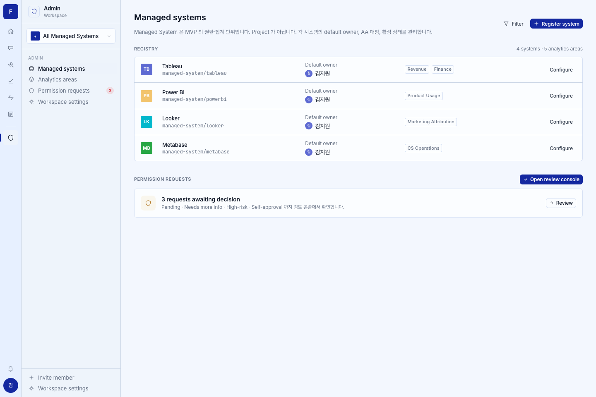
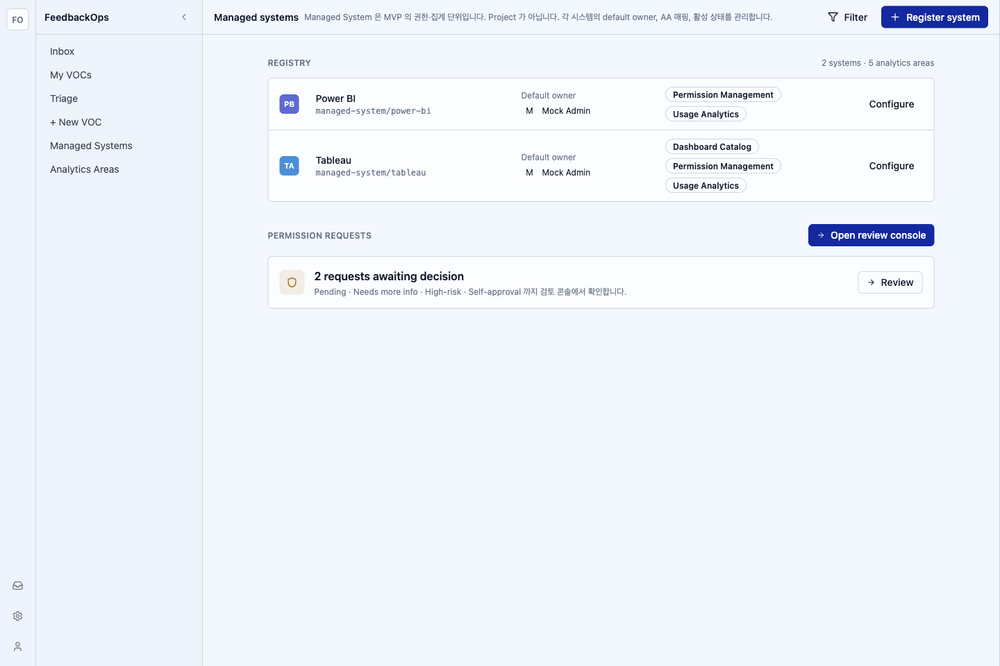

/admin/managed-systems (issue #87)data-shape, expected, and out of scope for a pixel gate.


| Region | Category | Prototype | Impl | Severity | Resolution |
|---|---|---|---|---|---|
| header.title | copy | "Managed systems" | "Managed systems" | match | — |
| header.subtitle | copy | "Managed System 은 MVP 의 권한·집계 단위입니다. Project 가 아닙니다. 각 시스템의 default owner, AA 매핑, 활성 상태를 관리합니다." | identical verbatim | match | — |
| header.actions | copy / hierarchy | Filter (subtle) + Register system (primary, plus icon) | Filter (subtle, funnel icon) + Register system (primary, plus icon) | match | — |
| registry.section-title | copy | "REGISTRY" + right count "{N} systems · {N} analytics areas" | "REGISTRY" + "2 systems · 5 analytics areas" | match (count is live) | — |
| registry.row.scope-mark | token / data-shape | 28px square, hand-authored color + initials (TB/PB/LK/MB) | 28px square, deterministic color (hash of slug) + initials (PB/TA) | intentional (locked deviation #1) | intentional-per-#87-locked-decision-1 |
| registry.row.name+slug | typography | name (500) + .mono "managed-system/{id}" |
name (font-medium) + font-mono "managed-system/{slug}" | match | — |
| registry.row.default-owner | data-shape | "Default owner" label + UserChip (김지원) | "Default owner" label + UserChip ("Mock Admin", resolved via /actors/resolve) | intentional (live owner) | intentional-per-#87-locked-decision-2 |
| registry.row.analytics-areas | data-shape | OutlineBadge pills per AA | OutlineBadge pills per AA (grouped by managed_system_id from fetchAnalyticsAreas) | match (content is live) | — |
| registry.row.action | interaction-affordance | subtle "Configure" | subtle "Configure" (opens edit dialog) | match | — |
| perm-requests.section-title | copy | "PERMISSION REQUESTS" + primary "Open review console" (arrow icon) | identical | match | — |
| perm-requests.callout | copy | shield icon + "{N} requests awaiting decision" + "Pending · Needs more info · High-risk · Self-approval 까지 검토 콘솔에서 확인합니다." + secondary "Review" | identical; "2 requests awaiting decision" (live count from GET /permission-requests) | match | — |
| perm-requests.icon-chip | token | amber tint chip (rgba(242,196,109,0.12) / --color-amber) | accent-warn/10 tint chip (Pack 17 light token equivalent) | token map (ADR-0021) | intentional-per-ADR-0021 |
| page.density | spacing | card radius + 1px subtle dividers, grid cols 40px 1.6fr 1.1fr 1.4fr 110px | same grid template + border-border-subtle dividers | match | — |
LOW items (3): scope-mark derivation, default-owner live name, and the amber→accent-warn token map. All three are documented intentional deviations (locked decisions / ADR-0021), not drift. No HIGH, no MEDIUM, no copy mismatch. Gate: pass.